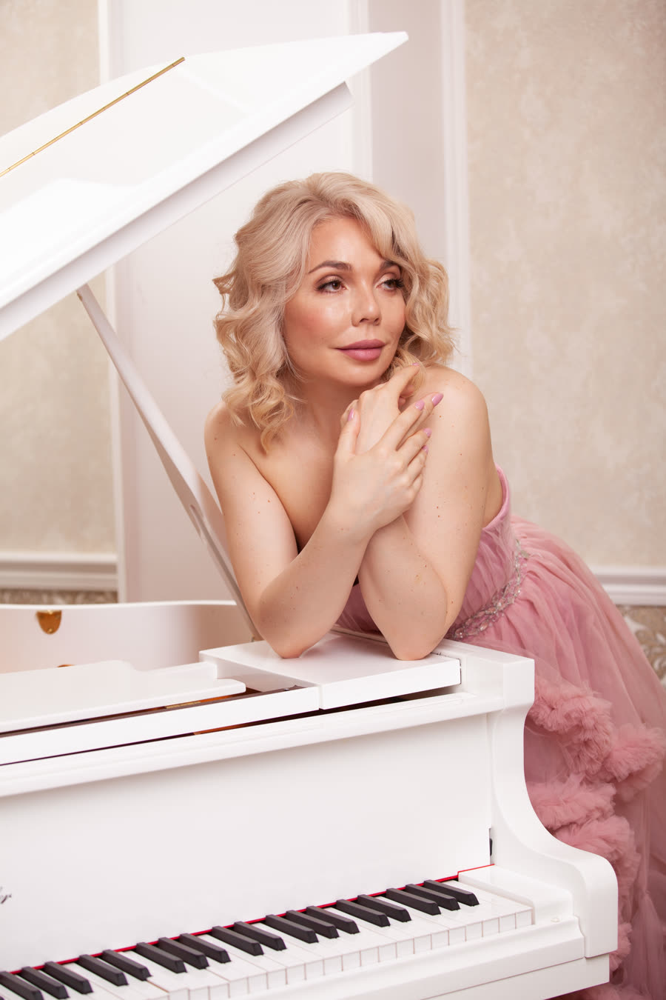
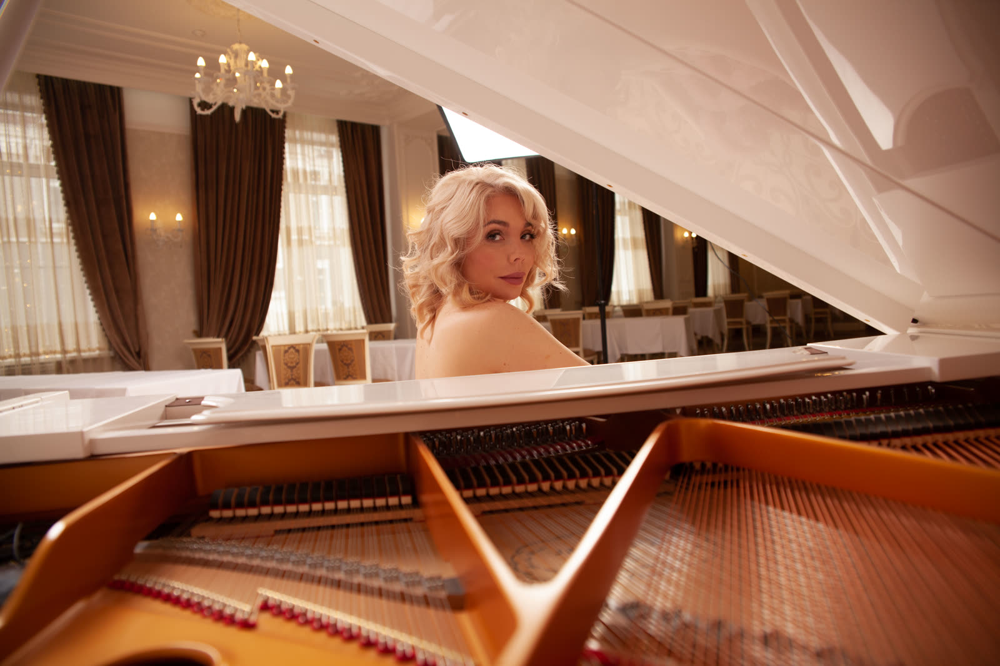
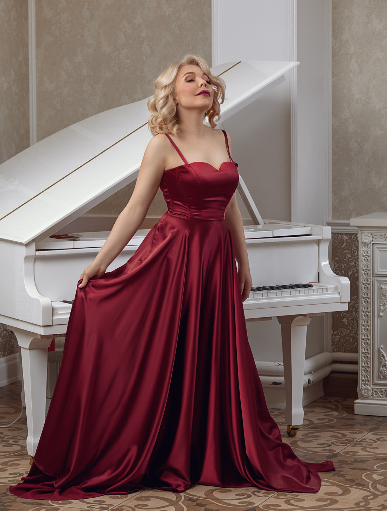
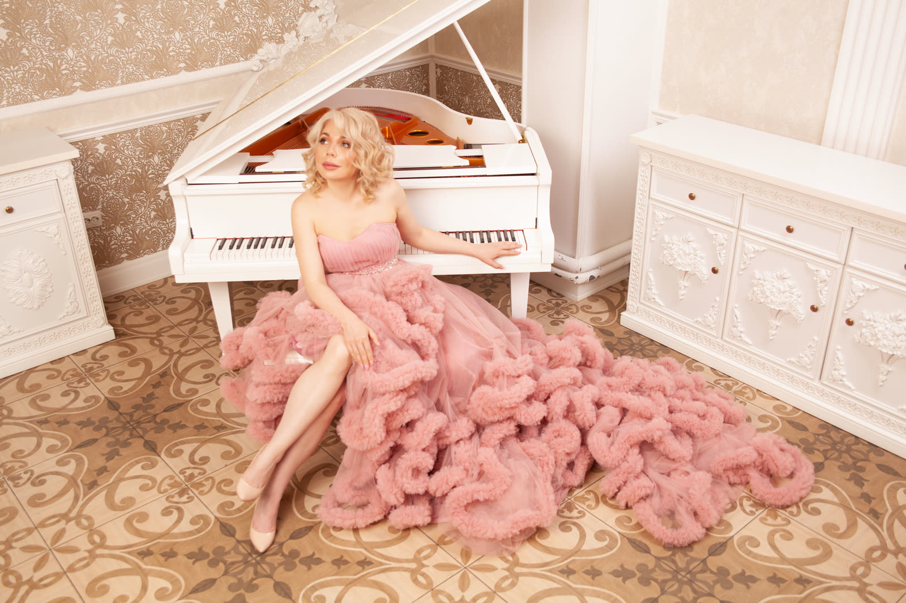
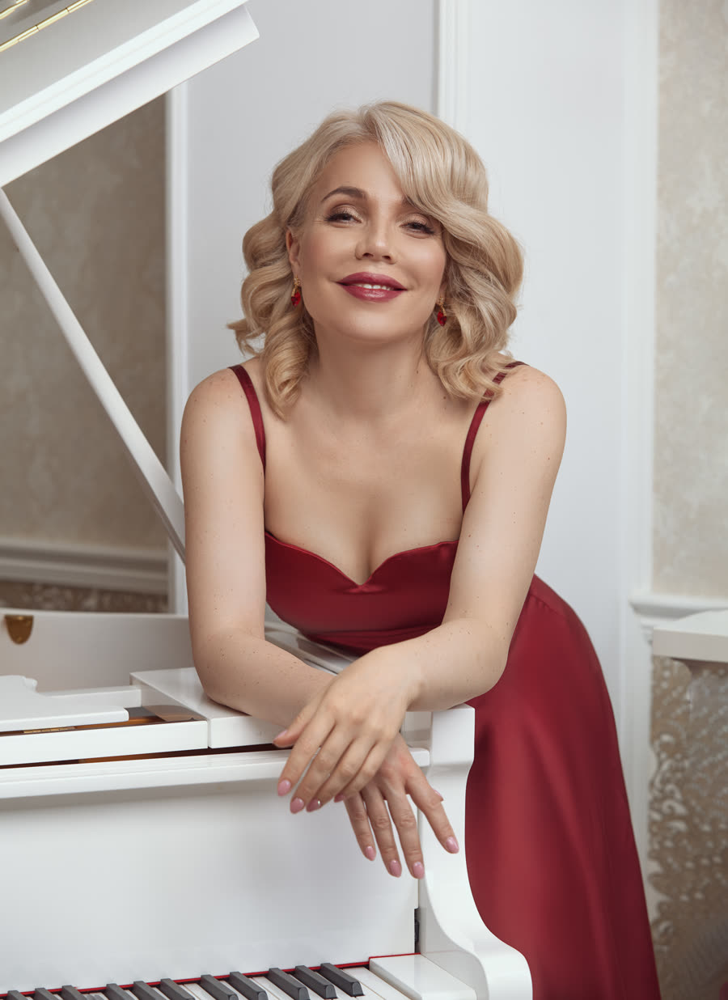
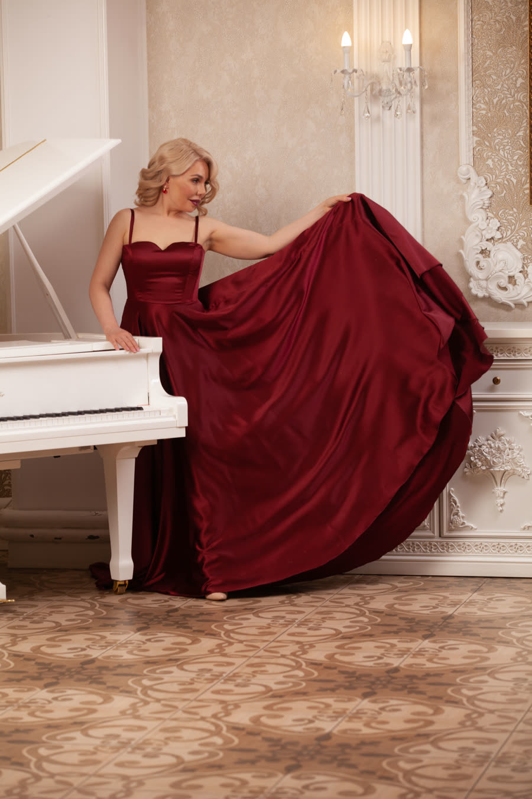

The music is the one part of a wedding that everyone in the room experiences at the same moment. I am Dr. Maria Pisarenko — Doctor of Musical Arts, prizewinner of international competitions in Paris and Rome, and a performer on stages across Russia, Europe, Asia and the United States. For your ceremony I play live: the prelude as your guests are seated, the processional you chose, and the recessional that sends everyone out.

A live pianist follows the room rather than a stopwatch. If the doors open late, the prelude simply continues; if the aisle takes longer than anyone planned, the processional stretches to meet it. Recorded music cannot do that, and it is the single most common reason a ceremony feels rushed.
Twenty to thirty minutes as guests arrive and are seated. Quiet, unhurried, and long enough to absorb a late start without anyone noticing.
Chosen with you — one piece for the wedding party and, if you would like, a different one for your entrance. Played to the pace you actually walk, not to a recording.
An interlude for a candle, a signing, a reading or a moment of silence. Held as long as the moment needs and ended cleanly.
The one bright, unmistakable moment of the ceremony. Chosen with you, and carried on until the last guest is out of their seat.
The hour that most often gets forgotten. Live piano at conversation volume keeps the room warm while photographs are being taken.
Through the meal and the toasts, at a level that lets the speeches land. Handover to a DJ or band afterwards is straightforward.

Nothing here is fixed. This is the ground most weddings start from, and we narrow it together once I know the shape of your day.
Pachelbel — Canon in D, the most requested processional there is
Wagner & Mendelssohn — the traditional processional and recessional
Bach — Air on the G String, the Prelude in C
Ave Maria — Schubert, and Bach–Gounod
Debussy — Clair de lune, Rêverie, Arabesque
Chopin — nocturnes, waltzes, the Raindrop prelude
Satie — Gymnopédies and Gnossiennes, for the cocktail hour
Beethoven — the Moonlight Sonata, Für Elise
Mozart, Schumann, Tchaikovsky — the lighter, singing pieces
Film and popular melodies — arranged for solo piano, by request
Rachmaninoff — when the evening asks for something larger
Your own piece — one that matters to you, prepared in advance
Solo piano covers the whole day for most weddings — ceremony, cocktail hour and dinner, on one instrument.
Duo with violin or cello for the ceremony, accompaniment for a singer, or a small ensemble can be arranged by request, booked well in advance and priced accordingly.
An acoustic piano at the venue is required. I play the instrument that is in the room — I do not bring one, and I do not play on an electronic keyboard. If your venue has no piano, one can be hired in for the day; ask them what is in the room and tell me early, so the programme is prepared for that instrument.
I play throughout the Las Vegas valley, and I travel beyond it for the right event — travel outside the valley is quoted with the booking.
Two hours is the minimum booking. Travel and any breaks within the engagement are part of the booked time and are included in the quote.
This is a concert engagement, not background cover. The programme is prepared for your room, the playing is at concert level, and the quote reflects that.
I am glad to work directly with your planner or the venue's coordinator on the run of show, so nothing has to be relayed through you on the day.
No prices on this page on purpose — a wedding quote depends on how much of the day you want covered. Write and you will get a real number.

Solo recitals and concerto appearances across Russia, Europe, Asia and the USA — including the Royal Academy of Music in London, the Paris Conservatory, the Moscow Tchaikovsky Conservatory and Santa Cecilia in Rome.
Second Prize at the International Piano Competition in Memory of Sviatoslav Richter, Paris, and at the Frédéric Chopin International Competition, Rome.
Trained at the Central Music School of the Moscow Tchaikovsky Conservatory and the Gnesins Russian Academy of Music, in the direct line of Goldenweiser, Neuhaus, Nikolayeva and Yudina.
Doctor of Musical Arts from the University of Nevada, Las Vegas. University faculty, Steinway Top Teacher, featured on Nevada Public Radio.
Grieg — Piano Concerto in A minor, Op. 16 · live with orchestra
Mozart — Piano Concerto No. 21 in C major, K. 467 · live with orchestra
Chopin — Piano Sonata No. 2 in B-flat minor, Op. 35 · live



Not a wedding? Live piano for Las Vegas events covers corporate receptions, conventions, private parties, galas and memorials.
Concert attire by default; black tie, all black, or something quieter on request — tell me your colours and I will stay out of your photographs.
Yes. The Wagner and Mendelssohn processionals, Pachelbel’s Canon in D and both settings of Ave Maria — Schubert and Bach–Gounod — are part of the repertoire, and one requested piece is prepared in advance as part of every booking.
A live pianist simply keeps playing until you are ready. A recording cannot do that — it either runs out or has to be restarted in front of your guests. Absorbing a late start without anyone noticing is one of the practical reasons to book a live musician.
Yes. Ceremony, cocktail hour and dinner can be booked together or separately, with two hours as the minimum booking. Tell me how long you would like music across the day and I will build one continuous programme for it.
Yes — an acoustic piano at the venue is required. I play the instrument that is in the room; I do not bring one of my own, and I do not perform on an electronic keyboard. Ask your venue what they have, and if there is no piano, one can be hired in for the day. Either way, tell me early, so the programme is prepared for that particular instrument.
Two hours is the minimum booking. Travel and any breaks within the engagement are part of the booked time and are included in the quote.
That is arranged with you personally rather than sold as a fixed package. Tell me the shape of your day — when music should begin, when it should stop, and what happens in between — and I will propose the playing and the breaks around it. Breaks fall inside the booked time, so the programme runs to your schedule, not to mine.
As early as you can. The date is held for one event only, so the earlier you write, the more likely your date is free and the more time there is to prepare a programme, and any requested piece, properly for your room.
Yes. A retainer reserves your date and takes it off the calendar for anyone else; the balance and the cancellation terms are confirmed in writing together with your quote.
I play throughout the Las Vegas valley — Las Vegas, Henderson, Summerlin, Enterprise and Spring Valley — and I travel beyond it for the right event. Travel is included in the quote.
Solo classical piano is the booking — that is what I do and what the programme is built around. A duo with violin or cello, accompaniment for a singer, or a small ensemble can be added by request, booked well in advance and priced accordingly, but the piano is the centre of the evening.
Concert attire by default. Black tie, all black, or something quieter on request — tell me what the room calls for.
Every event is quoted individually, so there is no price list. To prepare a quote I need the date, the start time and how long you would like music; the venue, and whether a piano is already there; the occasion and the mood you have in mind; and any piece that must be included. This is a concert engagement, not background cover — the programme is prepared for your room, the playing is at concert level, and the quote reflects that.
Send the date and the venue and I will come back to you with a programme suggestion and a quote. Wedding dates in Las Vegas fill early in the season — the sooner you write, the more I can prepare for you.
masha.pisarenko@gmail.com 702-809-7576Planning a corporate event or a private celebration? See corporate & conventions, or live piano for Las Vegas events for every other occasion.